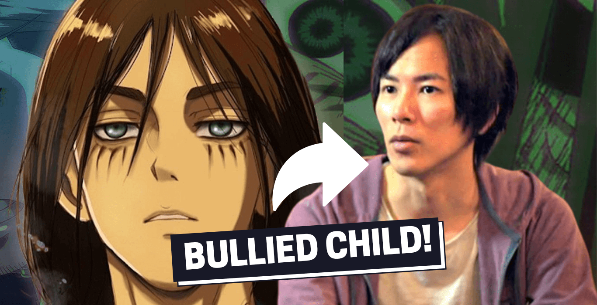

Biography
Embark on a journey through the life of Hajime Isayama, from my formative years to the present day. Uncover the personal
experiences and influences that have shaped my artistic perspective, guiding me to craft one of the most iconic manga
series in history. Traverse the milestones, challenges, and triumphs that define Isayama's unique narrative.
